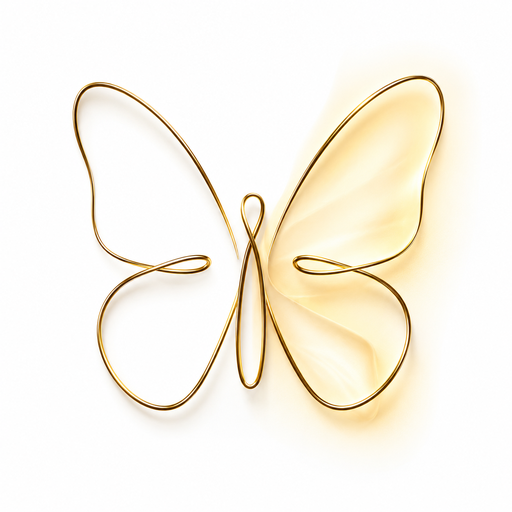

한국어
English

Perfect Brow
전문가용 눈썹 디자인 도구
사진 선택
Professional Eyebrow Measurement Tool
all line
↶
되돌리기
Eye
50
▲
▼
줌
위아래
좌우
밸런스
Center
50
▶
◀
🖼
사진변경
☆
프리셋
👁
눈가이드
⬇
사진저장
🔒
사진잠금
↺
초기화
프리셋 저장
취소
저장
프리셋
닫기
＋
현재 설정 저장
프리셋 이름 변경
취소
저장